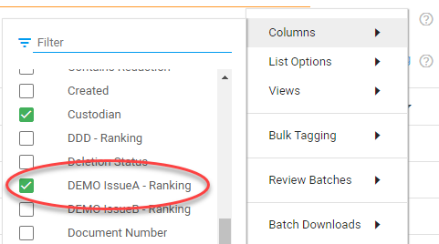
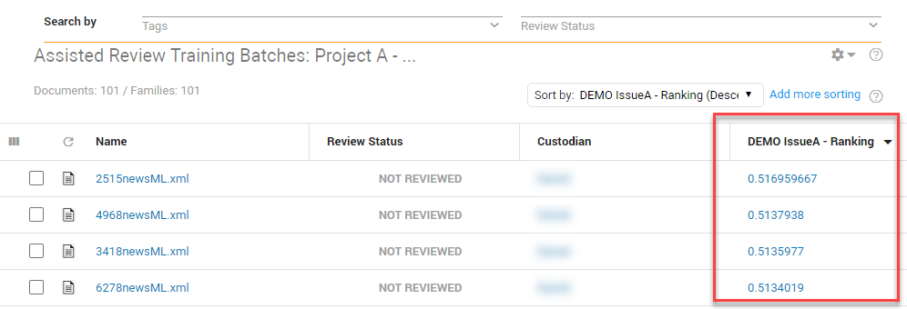

The (binary) classifier is a learning algorithm that is used to label documents as being responsive or not responsive for an issue.
The classifier ranks documents with a value (between 0.0 and 1.0). The higher the value, the more responsive the document is.
You can view the ranking of documents in an issue using the ranking column in Document List. The results of this ranking helps you to determine the Classifier Threshold Score.
First, select the correct ranking column:

Then, sort the column by ascending or descending order:
